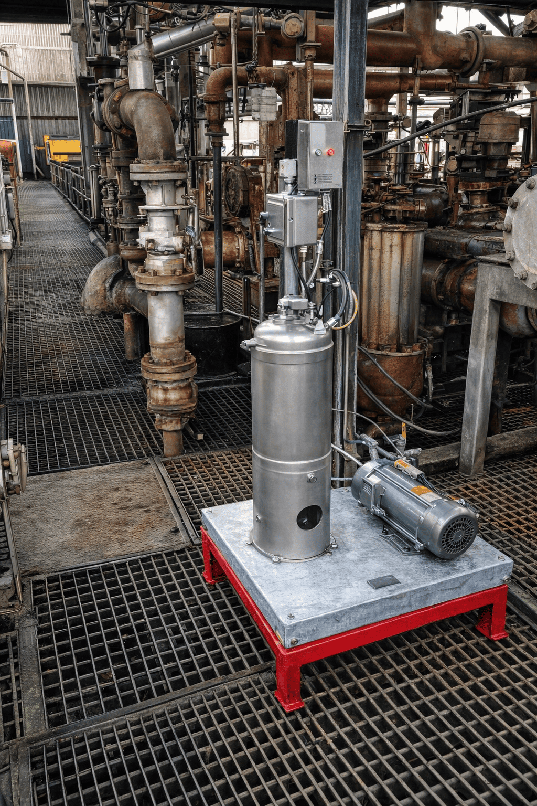
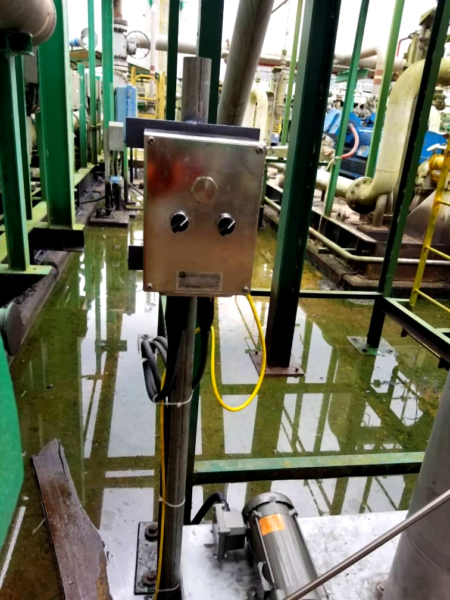

We are committed to providing end-to-end, technology-driven solutions that enhance efficiency, reliability, and long-term value across every project we undertake.
Complete electrical design, installation, and management for offshore and onshore operations, including power distribution and backup systems.
Precision measurement and instrumentation systems for process monitoring, flow measurement, and quality control across all operations.
Advanced automation solutions for process control, SCADA systems, and operational optimization to maximize efficiency.
Cloud-based solutions for data management, analytics, and operational insights to support decision-making.
Reliable communication infrastructure for remote operations, including satellite and terrestrial network solutions.
End-to-end project management from conception to completion, ensuring timely delivery and quality outcomes.
Strategic sourcing and procurement of equipment, materials, and services tailored to project specifications. We ensure cost-effectiveness, quality standards, and timely delivery of all required components.
Professional construction and installation services delivering infrastructure projects with precision, safety compliance, and adherence to timelines. Our experienced crews handle complex builds across diverse environments.
We execute comprehensive installation of CliffMock Autosampler systems, ensuring proper setup and integration into existing laboratory workflows.

We also carry out the installation of Autosampler Probes and Grabbers, ensuring proper positioning and integration into the existing laboratory setup.
Our team specializes in the installation of control panels for industrial automation systems, ensuring seamless integration with existing infrastructure.

Full-service engineering, procurement, and construction work, pipeline modification, welding and hot tapping of 2 inch on 14 inch crude export line. We deliver projects on time, within budget, and to the highest quality standards.

Round-the-clock maintenance, technical support, and asset integrity management to ensure your operations run smoothly and achieve maximum uptime.
Let's discuss how NEOCON INTEGRATED SERVICES can help transform your projects and achieve your business goals.